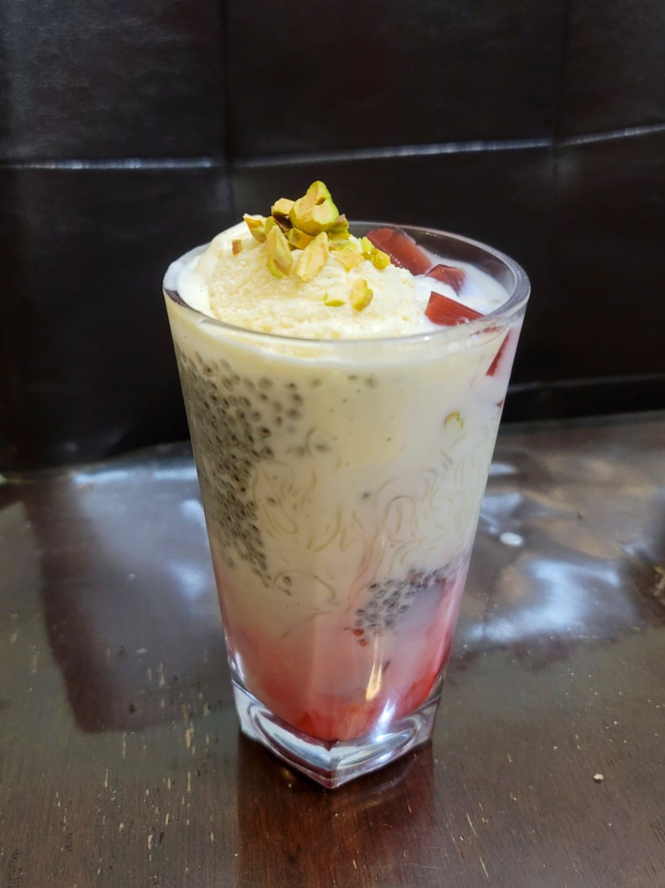

Falooda

Ingredients:
- 3 1/2 cups Milk, or 7 cups Milk boiled and reduced to 3 1/2 cups
- 6 tbsp Sugar
- 1 tbsp Tukmaria seeds (Basil seeds)
- 50 g Dried falooda sev
- 4-8 tbsp Rose jelly
- 4-8 tbsp Rose syrup
- 4-8 scoops Vanilla ice cream
- Pistachios, chopped, to garnish
- Optional: Red food coloring
Instructions:
- Add the sugar to the milk and mix to dissolve. If using 7 cups of milk, add the milk to a pot and bring to a boil. Reduce to about half and then transfer to a fridge to chill completely.
- Add the tukmaria seeds to about 1 cup of water or more to soak. Let soak for at least 20 minutes and then strain out the water.
- Bring a pot of water to a boil. Add the sev and let cook for about 1-3 minutes, or until cooked completely. Then strain from the water and rinse with cold water.
- Prepare 4 16 oz glasses. Add evenly to each glass in order: rose jelly, tukmaria seeds, sev, rose syrup, and then the milk. If there is no food coloring already present in the rose syrup, optionally add 1-2 drops of red food coloring to the bottom of each glass before adding the ingredients. Then top each with a scoop or two of the vanilla ice cream, a little more rose jelly, and some chopped pistachios. Serve chilled.